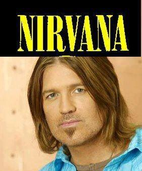
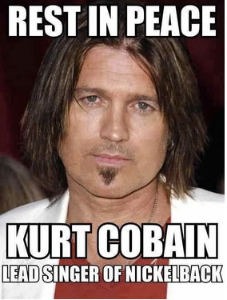
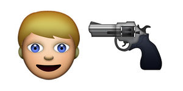

Nirvana (banda)
 De: La Frikipedia, la enciclopedia extremadamente seria.
De: La Frikipedia, la enciclopedia extremadamente seria.
De la serie Grupos musicales:
Más allá de la escopeta, existe un cerebro.
| Origen
|
Del suicidio.
|
| Tiempo
|
Antes del escopetazo - Después del escopetazo.
|
| Estilo
|
Rancheras.
|
| Discográfica/s
|
Escopeta records.
|
| Miembros
|
Curco Escopetas Locas Vein, uno que pasaba por alli y dave grohl (si, el de foo fighters
|
| Estado
|
Sin Cabeza.
|
| Sitio web
|
{{{sitio web}}}
|
«Quiero una escopeta»
~ IP anónima cuando escuchaste sobre la muerte de Curco.
«Lo mejor que hizo no fue agarrar una guitarra, sino la escopeta.»
~ Axl Rosas cuando supo la muerte del Curco.
«Curco no se mató, yo lo maté, digo ¡¿Kurt por qué lo hiciste?! Te amo tanto.»
~ Curni Lovecuandolomató Discurso después de la muerte de su esposo.
Escopetana, Nirvana o sólo Curco Vein fue una banda que implementaba la destrucción de equipos de sonido, el suicidio, las drogas y las escopetas. Lo formaban Kurt Cobain/Curco Escopetas Locas Vein, Kirst nadie sabe su nombre, Y el otro desconocido.
Historia, o lo que sea.
 Curco con el logo de Escopetana
El desconocido 1 se conocieron en una escuela de drogadictos, se conocieron porque eran fanáticos de Los Banda desconocida Melvins. Durante sus primeros meses el nombre de la banda pasó por una serie de cambios como: Eski rou, Penca, Sheu, BlissiTed Ed, Fred y Eddy. La banda finalmente escogió el nombre de Escopetana Nirvana, el cual fue elegido por Escopetas locas declarando «Quería un nombre que sonara bonito o agradable en lugar de uno común, por ejemplo esta el nombre de Remington (Marca de la escopeta usada)»
Covein y Desconocido volvieron a Siarul y colocaron un anuncio en el periódico que decía: «Banda de Jevi Metal Jarcor con Rancheras con influencias de Smith aéreos, Plasma con pantalla con Led/Zeppelin, Black Sábado, Bandera negra, Scratch ácido y Butjol surfeadores busca un narizón como Rengow Estrella baterista» para lo cual un amigo de ellos les presentó al desconocido 2, quien respondió a su anuncio y tuvo rápidamente su primer show con Escopetana para mayo de ese mismo año.
Bitch Bleach
En noviembre de 1988, Escopetana se puso en contacto con la discográfica de Siarul Sub Popó, por medio de la cual fue lanzado su primer "sencillo" «Love Buzz LightYear». El álbum de la banda titulado Bitch salió a la venta en el mes de junio de 1989. El álbum estuvo influenciado En verdad se copiaron de las canciones de principalmente por The Alvins y las ardillas, Mudmiel y en gran parte por el METAL SUPER JARCOR de los años 70 de Black Sábado y Plasma con pantalla Led Zeppeina. Después del lanzamiento de Bitch, Escopetana se embarcó en su primera gira nacional. El álbum se convirtió en un álbum favorito de las estaciones universitarias, acilos de ancianos, centros de rehabilitación de Drogas, Alcohólicos anónimos de radio de Estados Unidos, hasta la casa de tu mamá, etc.
Nevel Nevermind (ICarly, sí)
En un año de esos, no sé cual, pero fue uno de esos, la banda comenzó a trabajar en algunas canciones como «En Bloom» y «(Pan/Bread)Breed». Después de varias canciones muy mierdas Curco desde ahí ya pensaba en coger una escopeta porque estuvo descontento con las canciones, sin embargo, la primera estupidez del álbum «Huele como espíritu adolescente», lo llamó así ya que además de drogadicto, pensaba en ir a fiestas de jovensitos pre-menstruales, al ir a esas fiestas le gustó el olor del sudor y mal olor al oler a los jovensitos sin desodorante y de ahí se inspiró en escribir el sencillo. Rápidamente ganó popularidad, en parte gracias a la cobertura radiofónica del vídeo de la canción que recibió alta rotación en Playboy MTV EmtiVi. Para Navidad, Nevermind estaba vendiendo arriba de 400 000 copias por semana en Estados Unidos, ganaron certificaciones, blablabla, cosas así de bandas, y más blablabla.
Problemas de Curco con Axl Rosita Fresita
Curco odiaba rotundamente a Guns N Roses y Escopetana), ya que estaban nominados, los Gansos rosas por Mejor Vídeo Porno (Llueve en noviembre ft Paquita la del barrio) y Escopetana por Nuevo Mejor Artista Drogadicto (Curquito Vein) y Mejor Vídeo Porrero (Hiede a espíritu adolescente), Nirvana aquel día interpreto un polémico "Lithium" (Que fue una mierda) y al acabar la "canción" Curco Escopetas Locas Vein destrozó toda la amplificación (presuntamente porque los Gansos Rosas tocarían después, y él les tenía envidia).Axl Rosita siempre quiso una relación tregua con Escopetana, Curco nunca lo quiso ya que iba en contra de sus mierdas ya que Rositas ya era una supermierdaestrella que participaba en reuniones del jet set, y Escopetas locas renegaba de todo esa mierda. Además Cobain era un feminista total (Era homo), no le gustaban los hombre que trataban como perras a las mujeres. A pesar de que llamó perra a su esposa Curni cuando ésta le pidió a Rositas que sea padrino de Frances Bean.
En tu útero
Fue una mierda, excepto por Cajita en forma de corazón, fin.
Muerte de Curquito
 Última foto de Curco is ded.
«Pensaba que estaba jugando con colorante rojo, hasta que lo vi ded.»
~ Curni Lof cuando se hizo la que no sabe de la muerte cuando ella lo asesinó.
«Ya era hora.»
~ Axl Rositas Al saber de la muerte de Curco.
Éxitos (Si es que hay)
| Canciones |
Año |
Álbum
|
| Hiede a espíritu adolescente |
Antes del escopetazo |
Nevel Pepermint
|
| Lithium |
Antes del escopetazo |
Nevel Pepermint
|
| Polly Pocket |
Antes del escopetazo |
Nevel Pepermint (Nada más es ese álbum que se conoce)
|
| Viólame |
Antes del escopetazo |
En el útero.
|
| You Know You're not Right Rositas |
Antes del escopetazo |
Un Álbum ahí.
|
Curiosidades
- ¿Sabías que Curco no era rubio natural?
- La creadora de este artículo no tiene nada que hacer.
- Axel Rositas quería relaciones sexuales con Curco ya que lo confundía con una perra.
- Nirvana era fan de los Biruls.
- Son una copia grunge de Led Zeppelin
- Curco Vein en verdad es Billy Ray Cyrus el papá de Mileysaurio.
- Curco Vein fue asesinado por Curni Lof.
- Hay un emoji del wasap en honor al Curco.
 Emoji del
wasá en honor al Curquito
Autor(es):
- Fordus
- Thelordg95
- Jidef
- LosBirulslof
- Zanza1121
Frikipedia 2005-2016, Licencia
GFDL 1.2 - Extraído por FrikiLeaks
 Rock & Roll
Rock & Roll